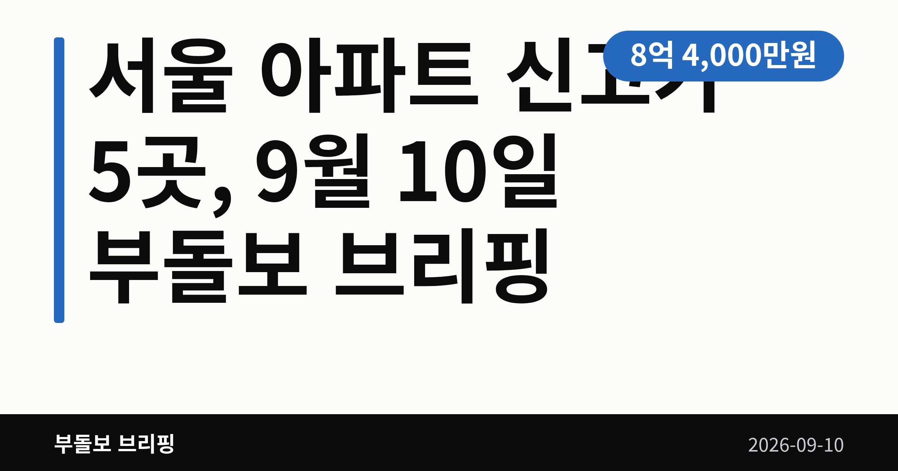
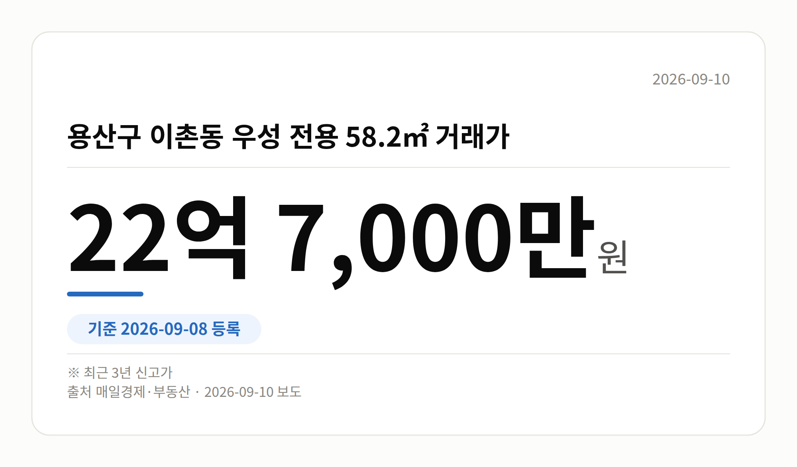
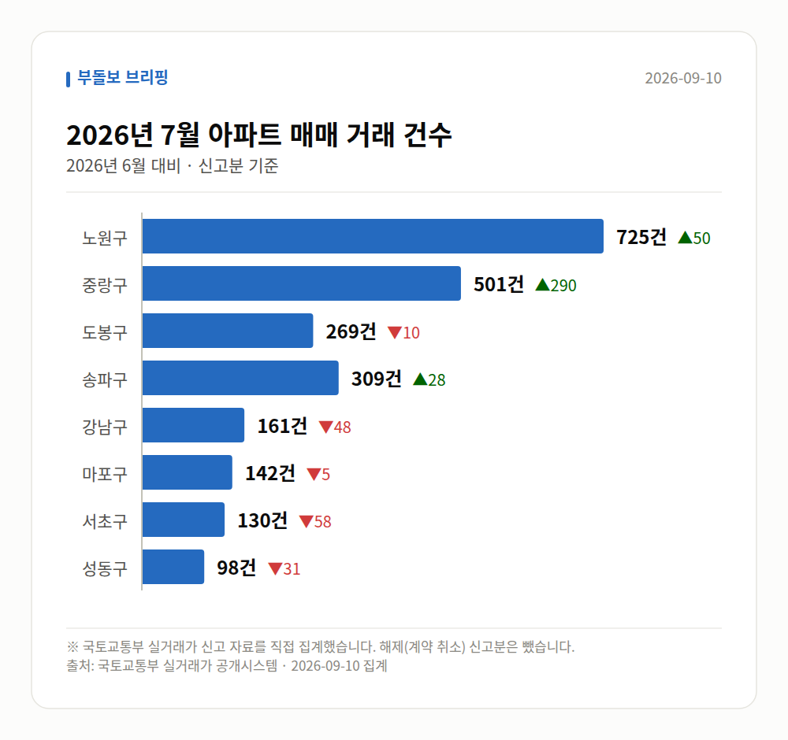

이 글은 2026년 9월 10일 기준으로 정리한 내용입니다. 실거래 수치는 2026년 7월 신고분입니다.
서울 아파트 신고가가 하루 등록분에서만 5개 단지에서 확인됐습니다. 9월 8일 국토교통부 실거래가 시스템에 새로 올라온 거래 가운데 노원·중랑·도봉·영등포·용산의 단지들이 최근 3년 최고가를 기록했습니다.
다만 이는 개별 단지·면적의 사례이며, 서울 전체 시세 흐름을 뜻하지는 않습니다.
여기서 신고가는 해당 단지의 그 면적 기준으로 최근 3년 사이 가장 높은 값에 등록된 거래를 말합니다. 매일경제 부동산 집계 기준으로 다음 다섯 건이 확인됐습니다.
| 자치구 | 단지·전용면적 | 거래가 |
|---|---|---|
| 노원구 | 상계동 한양 86.62㎡ | 8억 4,000만 원 |
| 중랑구 | 신내동 새한 84.4㎡ | 7억 1,000만 원 |
| 도봉구 | 창동 동아그린 59.96㎡ | 8억 5,000만 원 |
| 영등포구 | 당산푸르지오 84.98㎡ | 18억 1,000만 원 |
| 용산구 | 이촌동 우성 58.2㎡ | 22억 7,000만 원 |
가격대는 7억 원대부터 22억 원대까지 넓게 흩어져 있습니다. 특정 가격대에 몰렸다기보다, 자치구마다 제각각 나온 기록이라고 보는 편이 정확합니다.

눈에 띄는 점은 강 남북을 가리지 않고 다섯 개 자치구에 흩어져 있다는 것입니다. 국지적으로 열기가 남아 있다는 신호로 읽을 수는 있습니다.
다만 브리핑에서도 계약일 등 세부 정보는 요약 수준으로만 확인된다고 밝히고 있습니다. 한 건의 거래가 그 단지의 평균 시세를 정하지는 않습니다.
그래서 서울 아파트 신고가 소식을 볼 때는 같은 단지·같은 면적의 최근 거래 여러 건을 함께 놓고 보시는 편이 좋습니다. 등록일과 계약일이 다를 수 있다는 점도 함께 기억해 두세요.
서울 8개 구에서 신고된 매매는 2335건입니다. 2026년 6월 2119건과 견주면 +216건입니다.
거래가 많은 곳: 노원구 725건(+50) · 중랑구 501건(+290) · 도봉구 269건(-10)
노원구 전세가율(전세 보증금 ÷ 매매가)은 가운뎃값 54.8%입니다. 같은 단지·같은 면적 128곳을 견줬습니다.
서울 25개 구 가운데 거래가 가장 크게 움직인 곳: 중랑구 +137.4%(211→501건, 묵동에 66.3% 몰림) · 동작구 +55.6%(153→238건)
이번 달 신고가

→ 그림 파일 img-stats-volume.png 을 이 자리에 올리세요
국토교통부 실거래가 신고 자료를 직접 집계했습니다. 해제(계약 취소) 신고분은 뺐습니다.
여러분이 지켜보는 단지에서는 최근 어떤 가격에 거래가 등록되고 있나요?
댓글로 알려 주시면 다음 글에 반영하겠습니다.